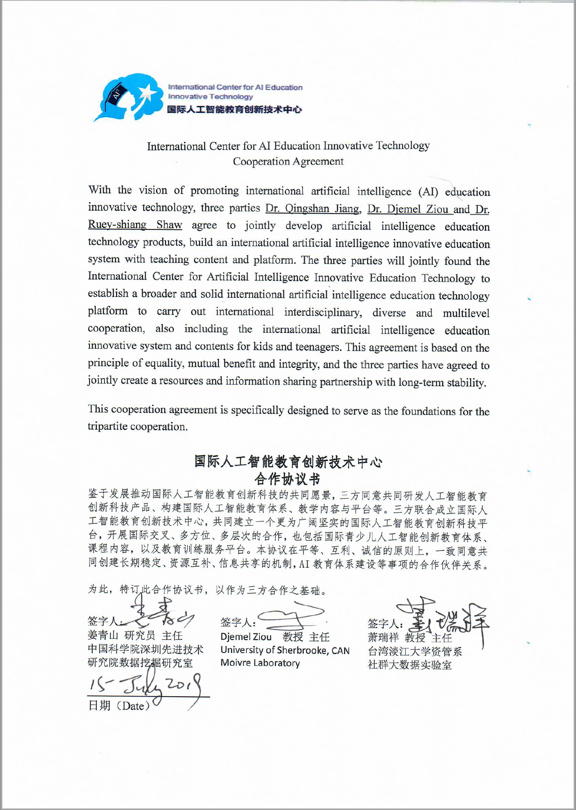
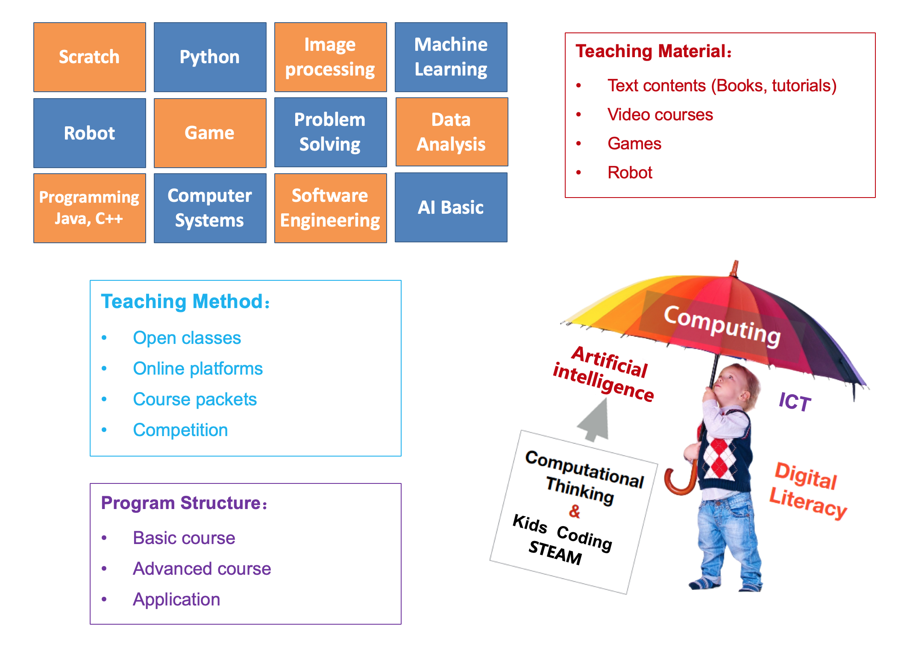
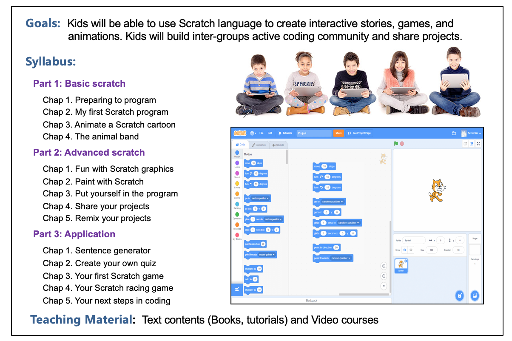
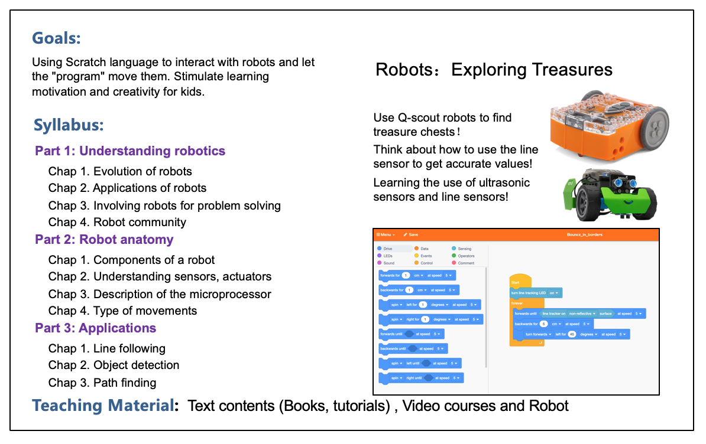
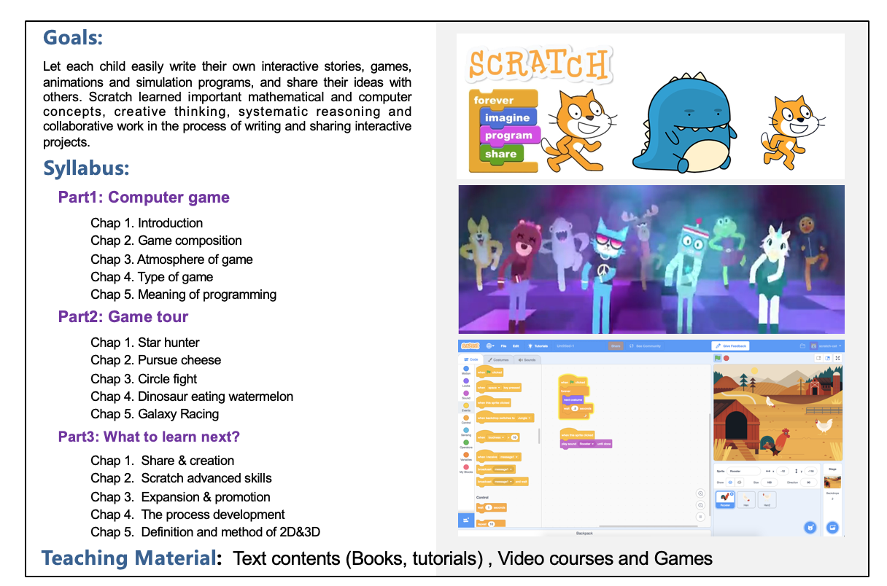
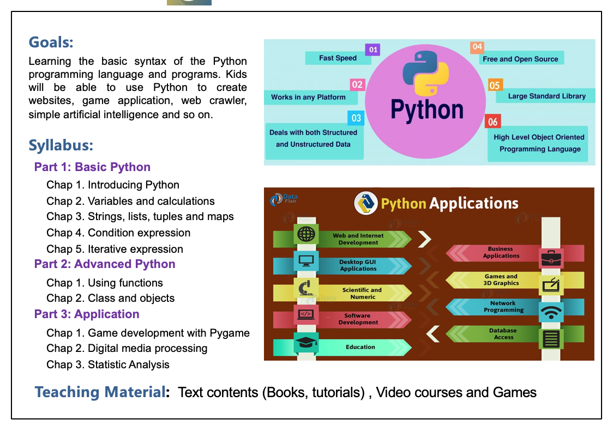
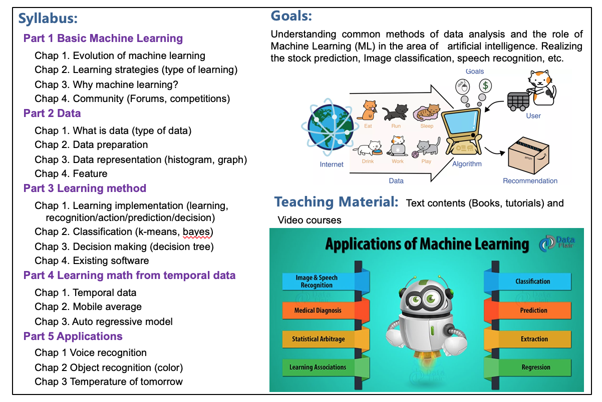
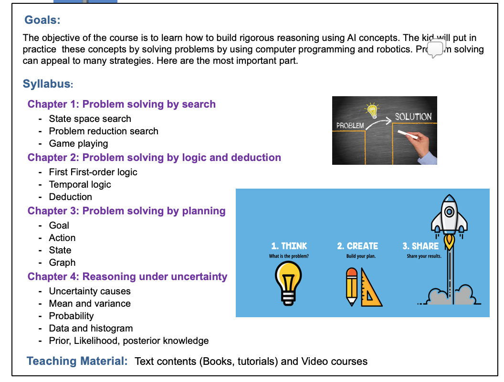
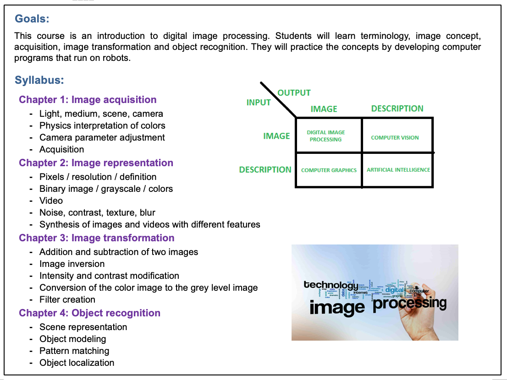
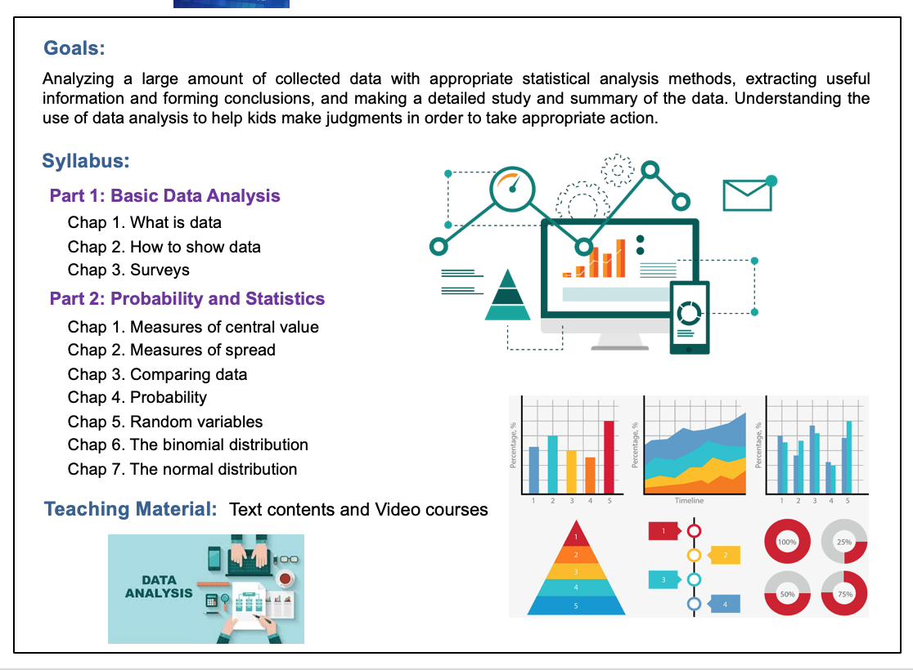

Mission
The AI International Academy (AI2) is a group of research laboratories and communities for the transfer of knowledge in AI and its applications through active learning, pleasant and supported by internationally recognized specialists.
AI2 is a non-profit organization that makes new human generations benefits from the AI revolution by developing technical skills, ways of thinking and problem-solving capabilities. AI2 maintains a rich learning environment based on intercultural exchanges.
Vision
- Guide new generations towards excellence in AI.
- Develop suitable approaches for active, alive, and joyful learning.
- Involve new generations in the consolidation of AI.
- Participate actively in the scientific education of new generations.
- Consolidate exchanges around AI between generations of different cultures.
Research Team


Course Plan

Syllabus
Scratch

Robot

Game

Python

Machine Learning

Problem Solving

Image Processing

Data Analysis

Contact Information
- Email:
- Phone: